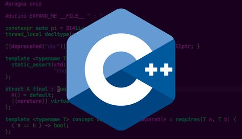
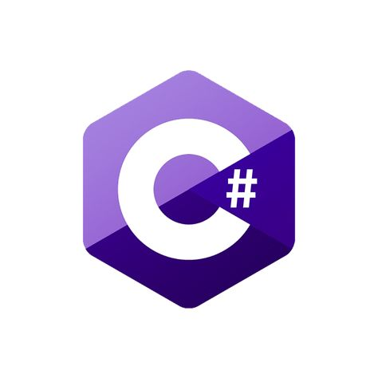

C++


C#

Un lenguaje de programación es una forma de comunicarnos con una computadora, tablet o celular e indicarle qué queremos hacer. Existen distintos tipos de lenguaje: principalmente de bajo nivel y de alto nivel. La diferencia se encuentra en lo cerca o lejos que estemos del hardware de nuestro equipo.
Los lenguajes de programación de alto nivel estan diseñados por ser más comprensibles y faciles de usar por los programadores. Su sintaxis y estructura se asemejan más al lenguaje humano que al lenguaje de máquina, facilitando el procesos y desarrollo y mantenimientos del cádigo.
Tipos de lenguajes de programación de alto nivelExisten varios tipos de lenguajes de programación de alto nivel, cada uno con sus propias ventajas y aplicaciones. Descubre algunos de los más populares:
Python: Es conocido por su sintaxis clara y concisa, lo que lo hace ideal para principiantes. Es ampliamente utilizado en desarrollo web, análisis de datos, automatización, inteligencia artificial y aprendizaje automático.
JavaScript: JavaScript es esencial para el desarrollo web. Permite crear páginas web interactivas y dinámicas, y su popularidad ha crecido con la llegada de frameworks como React, Angular y Vue.js.
Java: Java es popular en el desarrollo de aplicaciones empresariales y móviles. Su portabilidad, robustez y seguridad lo hacen ideal para aplicaciones de gran escala.
C#: Desarrollado por Microsoft, C# es ampliamente utilizado en el desarrollo de aplicaciones de Windows y videojuegos mediante el motor Unity.

Los lenguajes de programación de bajo nivel, como Assembly y C, proporcionan un control más directo y preciso del hardware. Esto es crucial para el desarrollo de sistemas operativos, controladores y aplicaciones donde la eficiencia y el rendimiento son críticos.
Eficiencia: Los programas en lenguajes de bajo nivel suelen ser más eficientes en términos de uso de recursos. Debido a su proximidad al lenguaje de máquina, pueden ser optimizados para un rendimiento máximo, lo que es esencial en sistemas embebidos y aplicaciones de tiempo real.
Complejidad: Son más difíciles de aprender y utilizar debido a su complejidad y menor nivel de abstracción. Programar en Assembly, por ejemplo, requiere un conocimiento detallado de la arquitectura del procesador y del hardware subyacente.